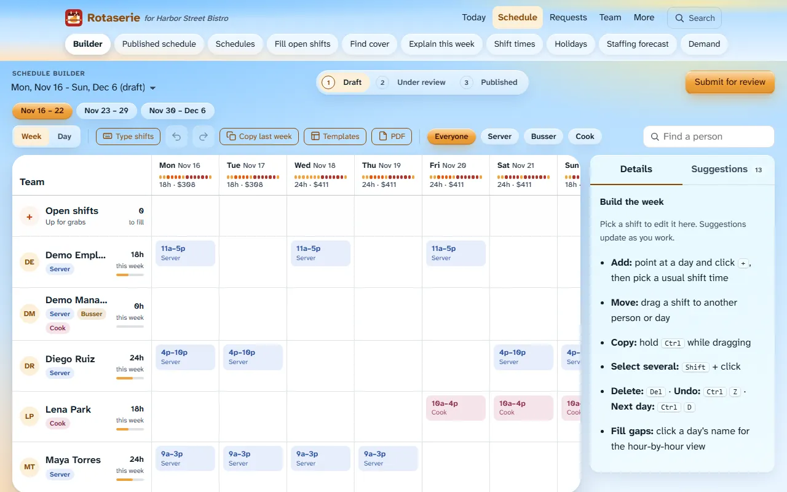
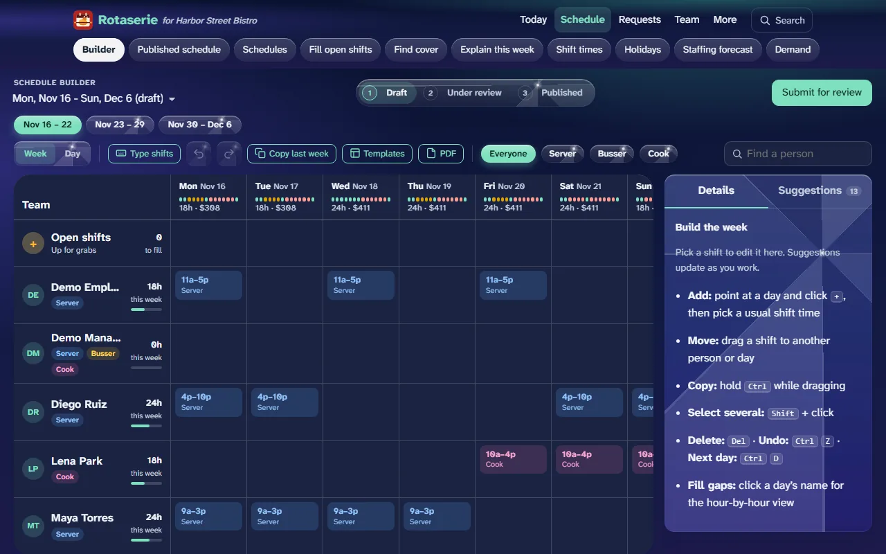
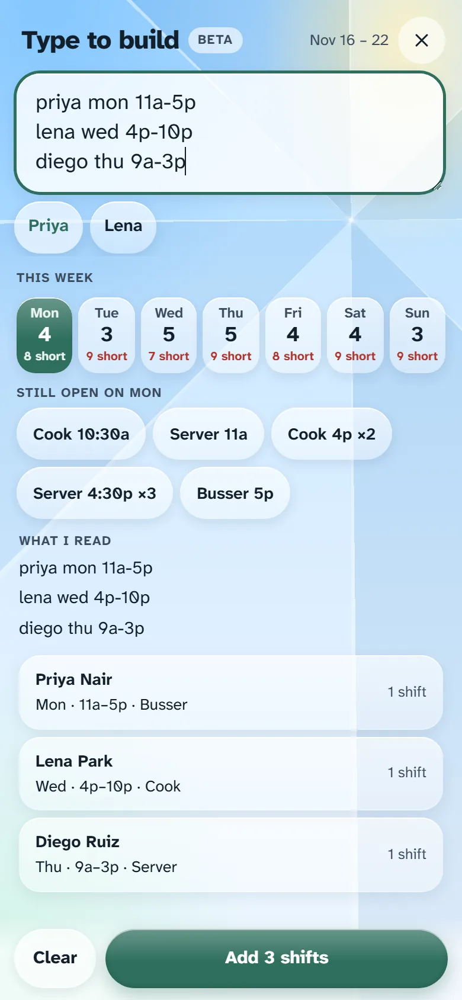
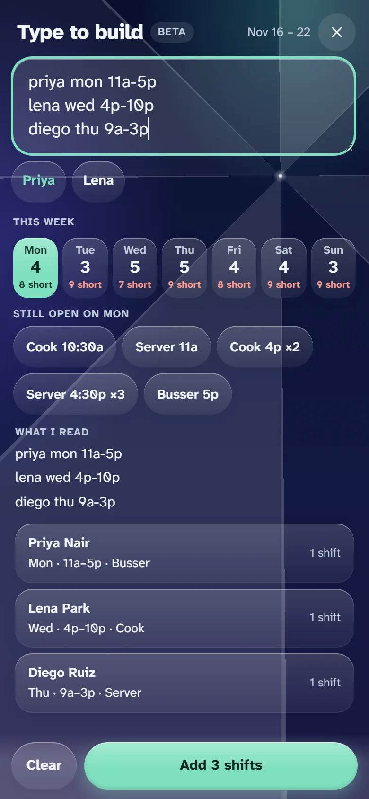
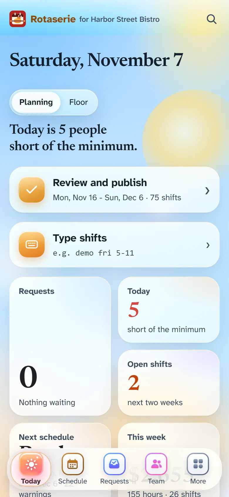
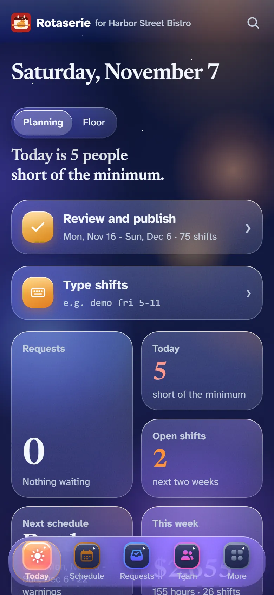

Built and used every week at Spiros
Type the week. Get the schedule.
Write “maria tue-fri 9-5” the way you'd text it, and the shifts are ready to add with one tap. Rotaserie catches time off, overtime and short days as you go, then sends the week to everyone's email and phone.
- On any phone or computer
- No app to download
- English and Spanish
Names, days and times in any order. If a line isn't clear, it asks or shows what it guessed.
Type it, copy last week, or tap your usual shifts. Then publish.
Time off, overtime and rest flagged as you build. Nobody can be double-booked.
Staff trade and pick up shifts. You approve in a tap.
Hours for every manager; cost for owners, before the week goes out.
For managers
The whole week on one screen.
Drag shifts between people and days, type them in, or let Rotaserie suggest who can take the open ones.
- Type to Build: a line per person, and the week fills in
- Fill open shifts with people who are free and can work the role; turn on Guaranteed fill and it never adds a labor-rule problem
- Live checks for time off, overtime, short staffing and rest
- Review and publish: by email and phone alert, then only changes are sent


From your phone
Run the week between rushes.
Today shows who's short and what's waiting. Type a few lines to fill the gaps, check the week, and publish without opening a laptop.
- Today: who's working, who's short, requests waiting
- Review before it goes out: shifts, people, hours and anything urgent
- Find cover when someone calls out, ranked by who can take it




For your staff
Their schedule, on their phone.
No download. You add them; they scan your QR code to put Rotaserie on their phone, sign in once, and see their next shift, pick up open shifts, swap with a coworker and ask for time off, in English or Spanish.


For owners
Know where the week stands.
Labor cost as you build
Cost per day and week, and labor % of sales from your point-of-sale's daily export. Wages and labor cost are for owners; staff see only their own estimated pay.
Thursday summary
Next week's hours, cost, overtime and open shifts, in your inbox.
Labor rules built in
Overtime and rest between shifts checked everywhere, and nobody can be double-booked. Washington (breaks, minors' hours, minimum wage), California (daily overtime, breaks) and Seattle minimum wage are ready.
Keep your time clock
Keep clocking in where you do now, or use Rotaserie's own clock and pay summary.
Set up in a day
Paste your staff list from a spreadsheet, or we'll set it up with you.
Your data is yours
Nightly backups, two-step sign-in, and a full export of your data whenever you want it.
Made for small teams
Built at a restaurant. Ready for yours.
Pick your kind of business when you sign up, and Rotaserie starts with its usual roles and shift times.
Restaurants
Servers, cooks and bussers, doubles and split shifts, tips.
maria tue-fri 4p-10p
Cafés and bakeries
Early openers, baristas and the morning rush.
jo mon-fri 6a-2p
Shops
Opening, closing and weekend cover for the floor and the register.
ben sat-sun 10-6
Salons
Stylists' days and the front desk, with time off in one place.
ana tue-sat 9-5
Fitness studios
Front desk, trainers and instructors, early and late.
kai mon wed fri 5a-1p
Field service
Technicians, helpers and dispatch, with on-call shifts.
rico mon-thu 7-5
Where it started
Spiros runs on Rotaserie.
Rotaserie was built at Spiros, a restaurant in Shoreline, Washington, to give a busy manager her time back. It runs Spiros's schedule every week: building the week, swaps, time off and publishing to the whole team.

Questions
Good to know.
Do I have to type the schedule?
No. Typing is the fastest way, but you can also drag shifts on the week, tap your usual shift times, copy last week, or keep a regular schedule that fills itself in.
Do my staff need to download an app?
No. Rotaserie runs in any phone's browser. Staff add it to their home screen and get phone alerts like any app.
Is it only for restaurants?
No. It was built at a restaurant, and it's ready for cafés, shops, salons, fitness studios and field crews, each with its own starting roles and shift times.
Does it replace my point of sale or time clock?
No. Keep clocking in where you do now. Rotaserie handles the schedule, swaps, time off and messages around it, and has its own time clock if you want one.
Is it in Spanish?
Yes. Everyone chooses English or Spanish for their own screens, emails and phone alerts.
How much does it cost?
One simple price per location, everything included. Ask for early access and we'll walk you through it.
Give your next schedule the night off.
Rotaserie is in early access. Tell us about your business and we'll set it up with you; your team can be on it the same day.
This opens an email to Robert, the founder. Or write to robertebanchero@gmail.com.